Case No. 03: The Hill (Nikola)
Part 1 of 4 · cold open + CASE FILE 1 "The Showman" · 0:00–3:21 · storyboard build, 2026-11-08 · for your approval
Cold open: the truck on the hill
0:00.0–0:15.6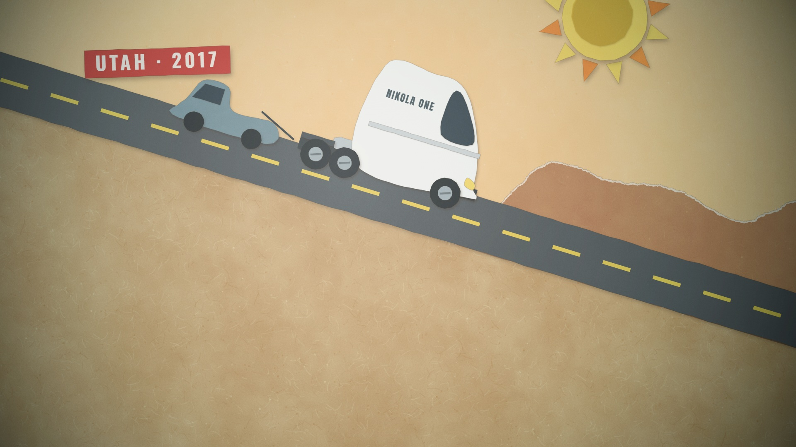
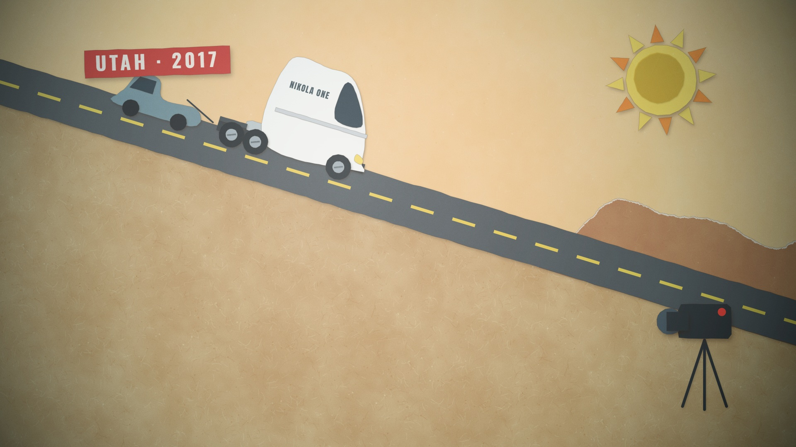
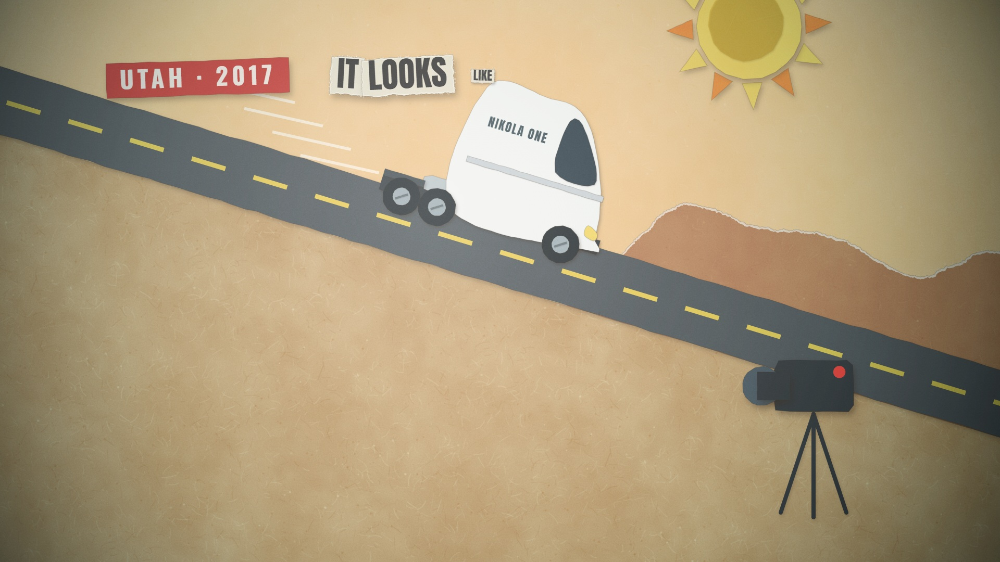
Narration (planned)
- Somewhere in Utah, on a long, quiet road, a crew tows a big white truck to the top of a hill.
- They set up a camera at the bottom.
- Then they let go.
- The truck rolls down the hill. Smooth. Silent.
- It looks like the future.
Picture
UTAH · 2017. A desert road on a slope. A small pickup tows the white NIKOLA ONE semi up the hill. A camera on a tripod at the bottom, REC blinking. “…then they let go.” The truck rolls down, silent: IT LOOKS LIKE THE FUTURE.
Sound
- desert wind (music/ambience)
- ambient mystery 01 (music/ambience)
- typewriter keys g
- car pass a
- camera focus a
- car pass b
- wind gust a
- sticker peel a
The video, and the problem
0:15.6–0:29.5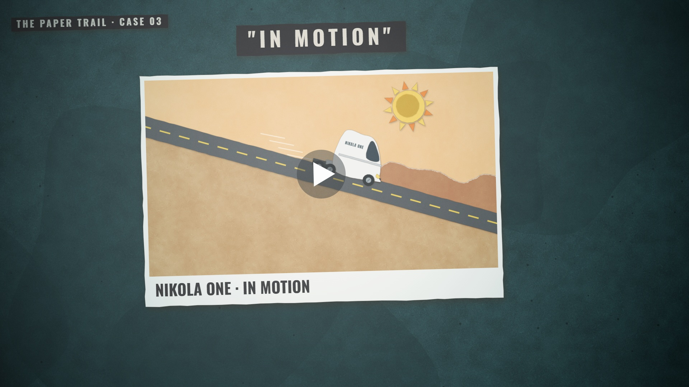
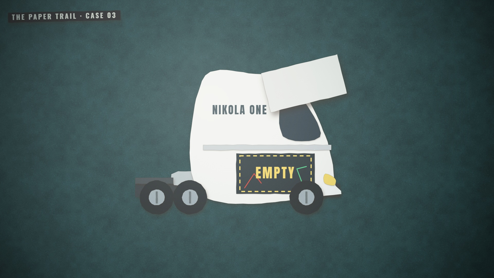
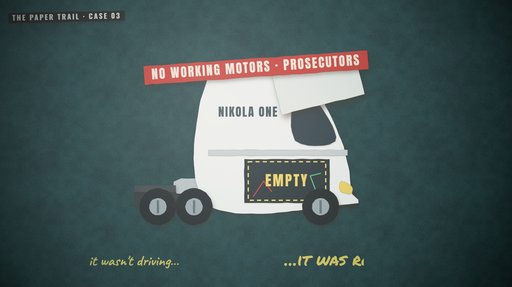
Narration (planned)
- Months later, the company posts the video online.
- It's called "In Motion".
- And here is the problem.
- According to prosecutors, that truck could not drive.
- It had no working motors.
- It wasn't driving down the hill.
- It was just… rolling.
Picture
The clip pinned as a posted video: NIKOLA ONE · IN MOTION, a social card “The truck of the future”. Then a big cutaway: the side panel lifts off an EMPTY engine bay (loose wires). NO WORKING MOTORS · PROSECUTORS. “it wasn’t driving… it was rolling.”
Sound
- desert wind (music/ambience)
- ambient mystery 01 (music/ambience)
- tension 01 (music/ambience)
- card swipe a
- card place 1
- notification ping a
- swell reverse a
- cutout slide a
- stamp press a
$30 billion, more than Ford
0:29.5–0:38.8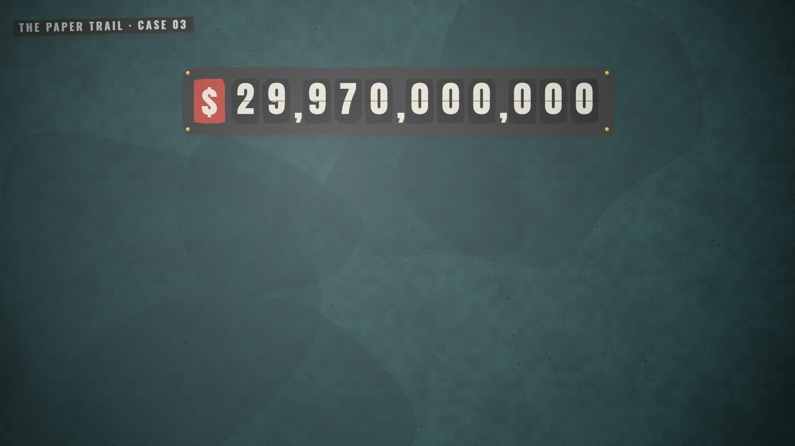
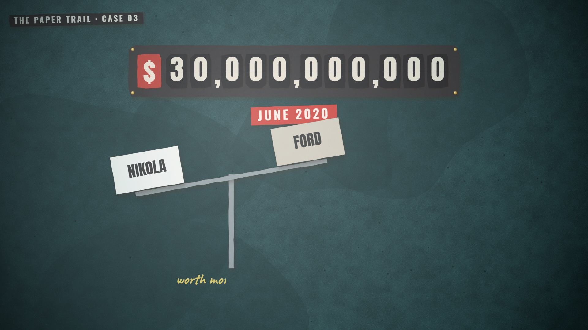
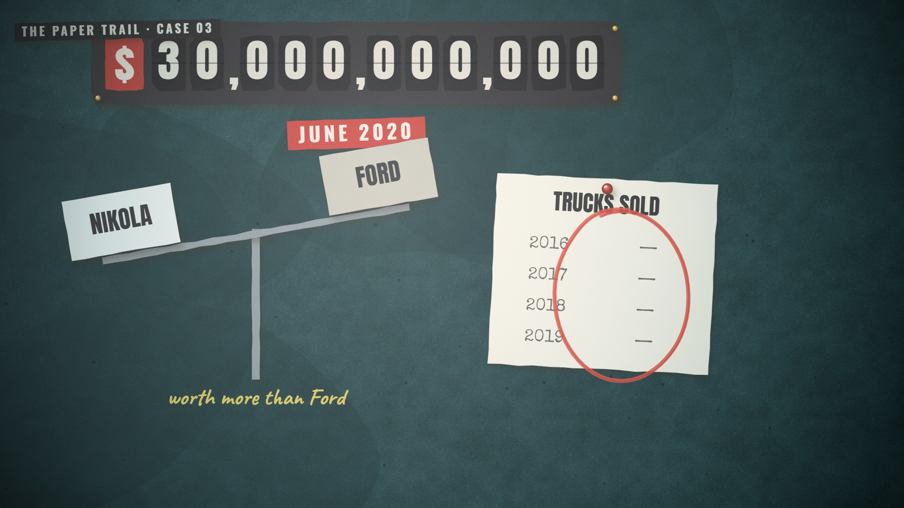
Narration (planned)
- Three years later, the company behind that truck was worth around thirty billion dollars.
- For a moment, it was worth more than Ford.
- It had sold almost no trucks.
Picture
A split-flap counter rolls to $30,000,000,000 · JUNE 2020. A paper scale tips: NIKOLA outweighs FORD, “worth more than Ford”. A ledger TRUCKS SOLD with empty years, circled in red.
Sound
- ambient mystery 01 (music/ambience)
- tension 01 (music/ambience)
- sticker peel b
- money counter a
- typewriter keys h
- paper slam a
- card place 2
- marker draw b
The man
0:38.8–0:55.4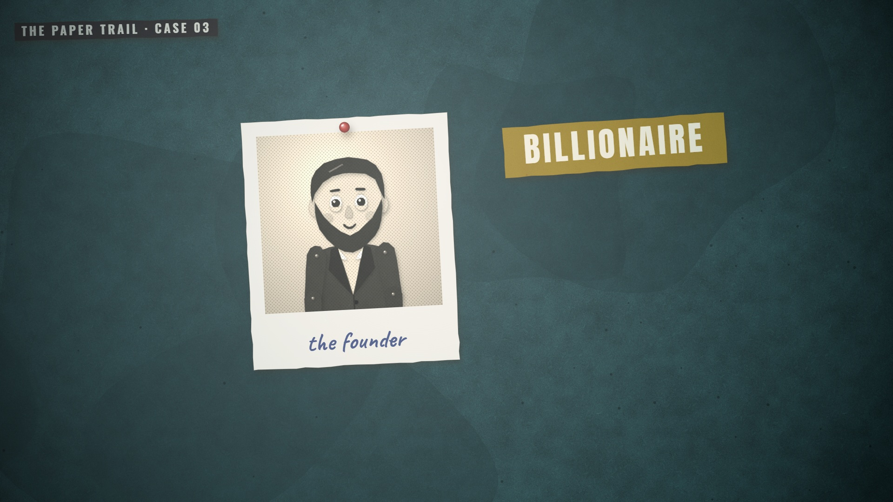
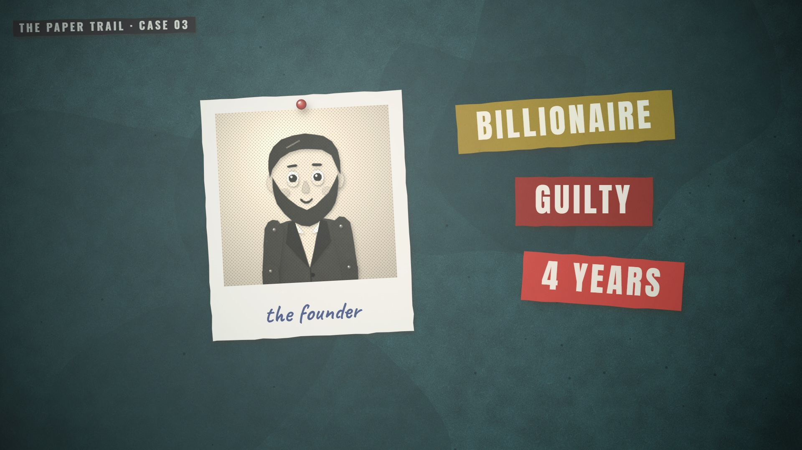
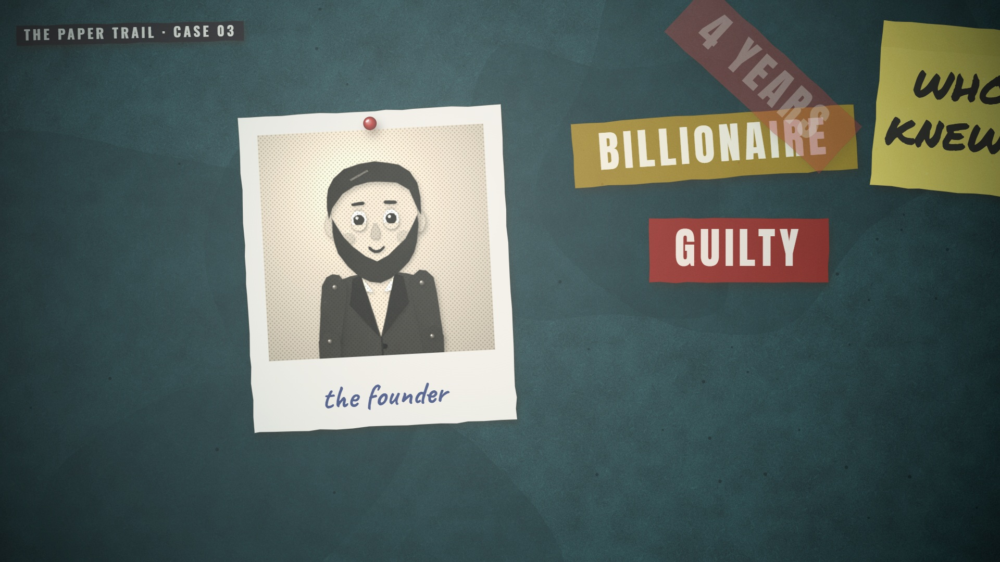
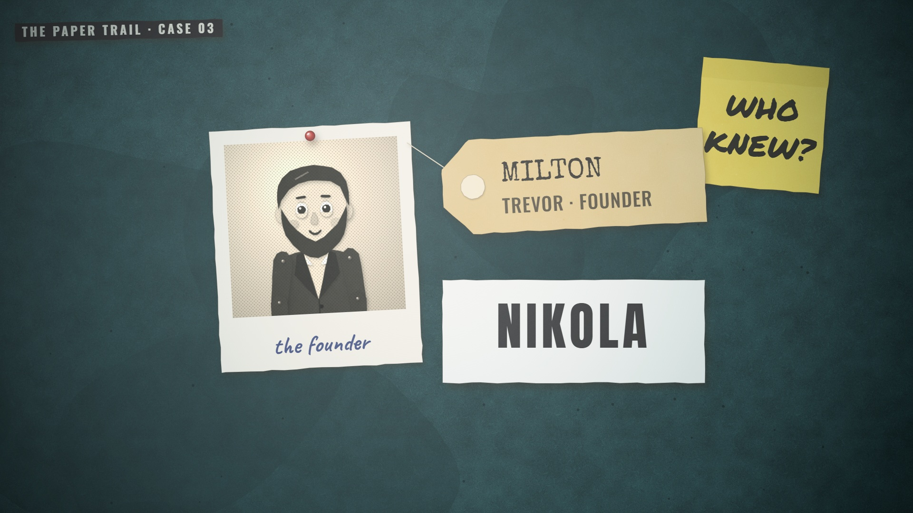
Narration (planned)
- The man who built it became a billionaire on paper.
- Then a jury found him guilty of fraud.
- Then a judge sentenced him to four years in prison.
- And then… he never served a single day of it.
- His name is Trevor Milton.
- And his company was called Nikola.
Picture
A polaroid of the generic founder puppet (beard, open-neck shirt; not a likeness), “the founder”. Tags slam in: BILLIONAIRE · GUILTY · 4 YEARS. Then the 4 YEARS tag peels off and flies away. WHO KNEW? Name tag MILTON · TREVOR · FOUNDER and a plain-type NIKOLA card.
Sound
- tension 01 (music/ambience)
- question 01 (music/ambience)
- card place 1
- stamp press b
- stamp double a
- stamp press g
- sticker peel a
- paper slam b
The homework
0:55.4–1:03.4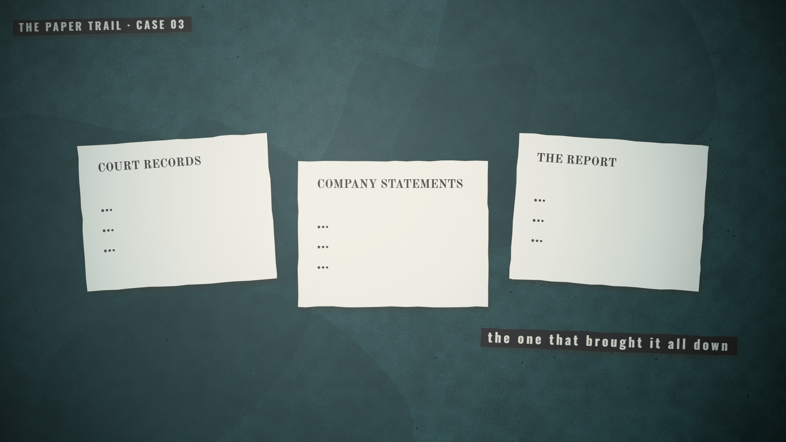
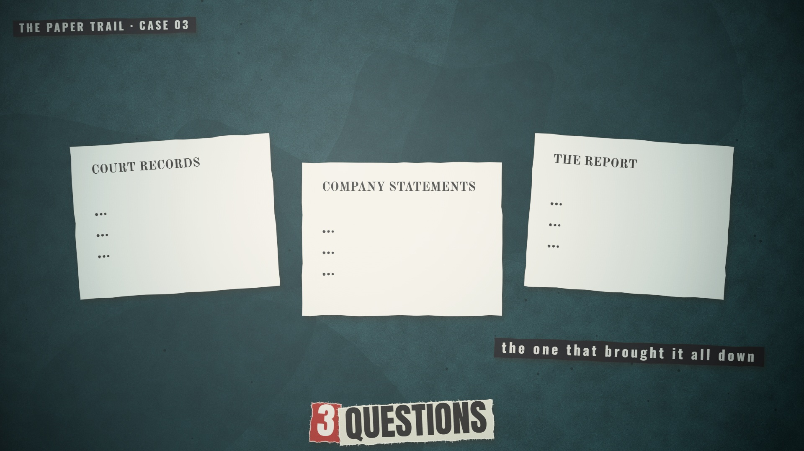
Narration (planned)
- So I went through the court records, the company's own statements, and the report that brought it all down.
- And three questions kept coming back.
Picture
Three documents pin up: COURT RECORDS · COMPANY STATEMENTS · THE REPORT (“the one that brought it all down”). 3 QUESTIONS.
Sound
- question 01 (music/ambience)
- card swipe b
- card place 1
- card place 2
- card place 1
- paper slam a
Three questions + title
1:03.4–1:19.1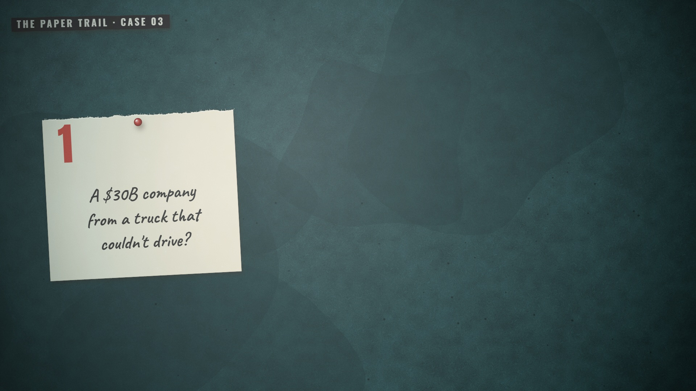
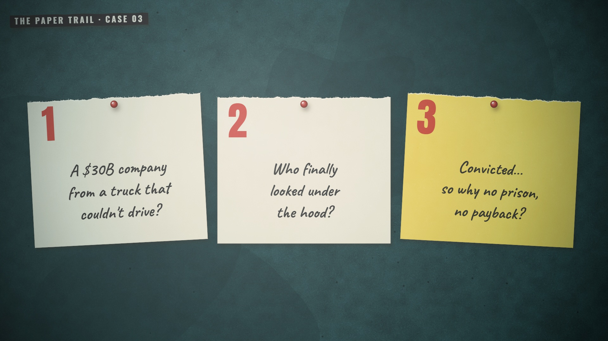
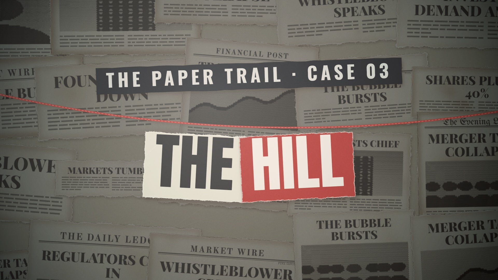
Narration (planned)
- How do you build a thirty-billion-dollar company around a truck that couldn't drive?
- Who finally looked under the hood?
- And how does a man convicted of fraud walk away without prison, and without paying his investors back?
- This is the paper trail.
- Case number three. The Hill.
Picture
Three cards: a $30B company from a truck that couldn’t drive? · who finally looked under the hood? · convicted… so why no prison, no payback? (yellow). Red string snaps across a clipping wall: THE PAPER TRAIL · CASE 03 / THE HILL.
Sound
- question 01 (music/ambience)
- tension 02 (music/ambience)
- sticker peel a
- push pin a
- push pin b
- push pin a
- string snap b
- paper slam a
This case is about you
1:19.1–1:25.2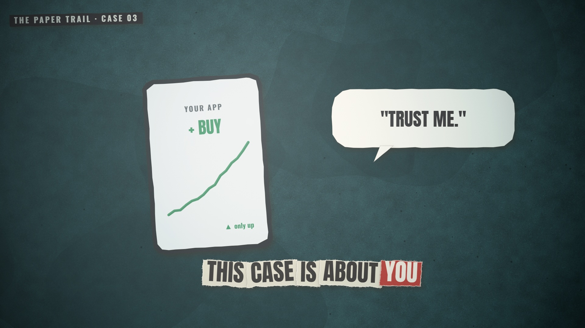
Narration (planned)
- And if you've ever bought a stock because a founder sounded sure of himself, this case is about you.
Picture
A phone trading app (+ BUY), a speech bubble “TRUST ME.” THIS CASE IS ABOUT YOU.
Sound
- tension 02 (music/ambience)
- sticker peel b
- notification ping b
- card place 2
- paper slam b
Chapter card
1:25.2–1:29.0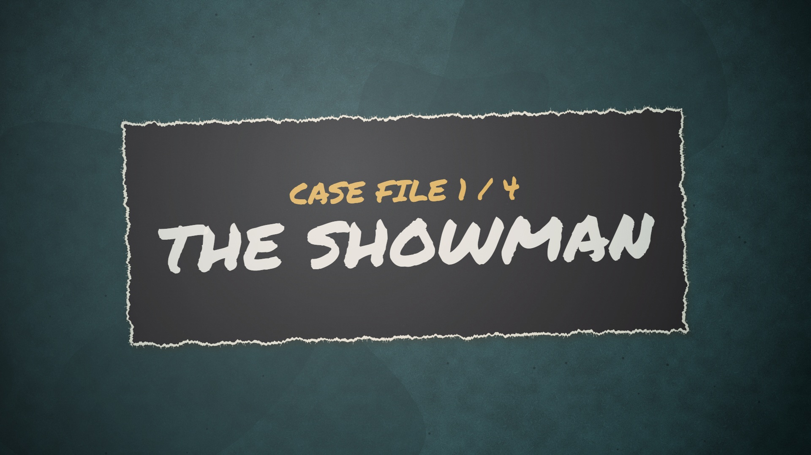
Narration (planned)
Picture
Black torn panel: CASE FILE 1 / 4 · THE SHOWMAN.
Sound
- tension 02 (music/ambience)
- card place 2
- marker draw b
Utah; the gift of talk
1:29.0–1:51.0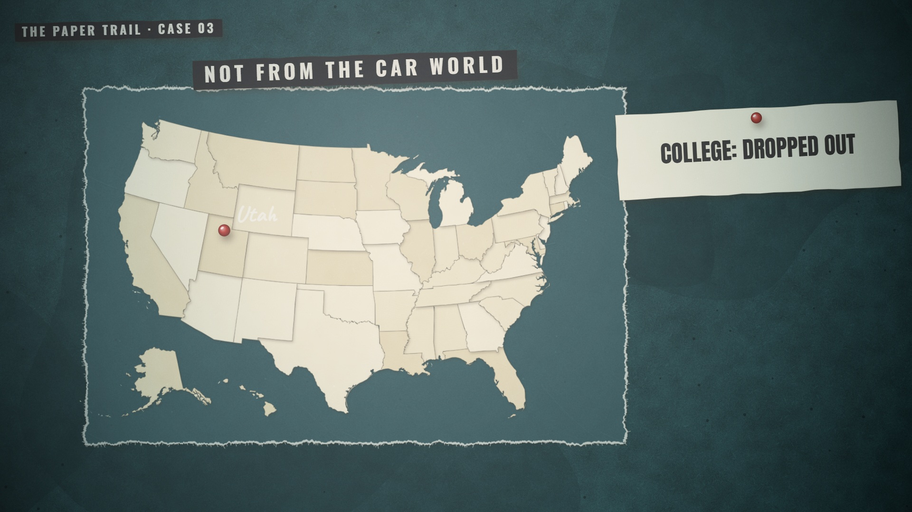
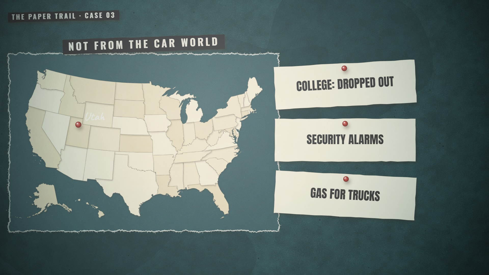
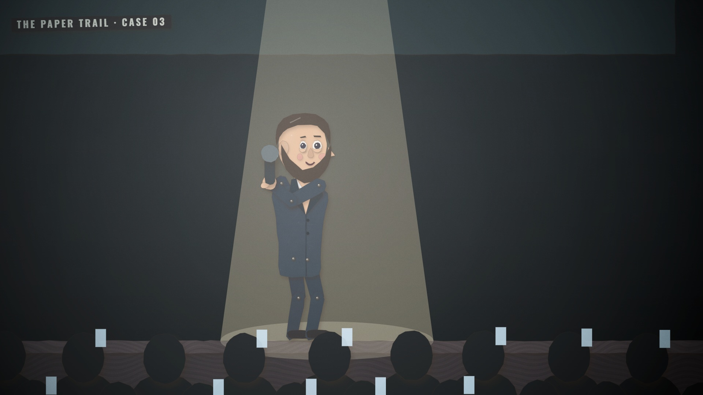
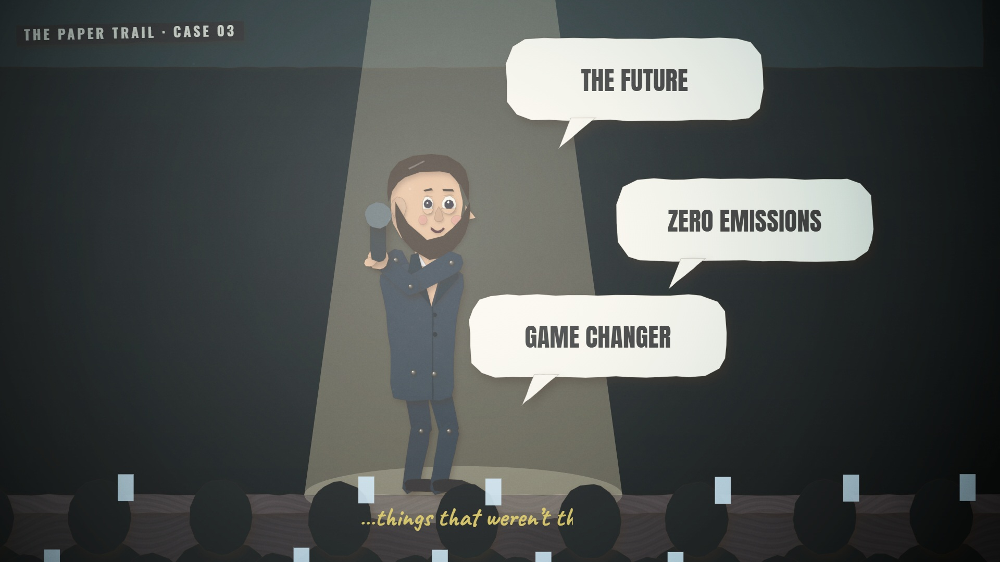
Narration (planned)
- Trevor Milton did not come from the car world.
- He grew up in Utah.
- He didn't finish college. Before trucks, he ran small businesses.
- One of them sold security alarms.
- Another was a natural-gas company for trucks.
- What he did have was a gift.
- He could talk.
- On a stage, in a podcast, on social media, Trevor Milton could make you see things that weren't there yet.
Picture
NOT FROM THE CAR WORLD: a US map, a pin on Utah. Cards: COLLEGE: DROPPED OUT · SECURITY ALARMS · GAS FOR TRUCKS. Then a stage: the puppet in a spotlight with a mic, a dark crowd with phone lights, bubbles THE FUTURE · ZERO EMISSIONS · GAME CHANGER. “…things that weren’t there yet.”
Sound
- explainer 01 (music/ambience)
- sticker peel a
- push pin a
- card place 1
- card place 2
- card place 1
- card swipe a
2014: the name, the hydrogen plan
1:51.0–2:06.0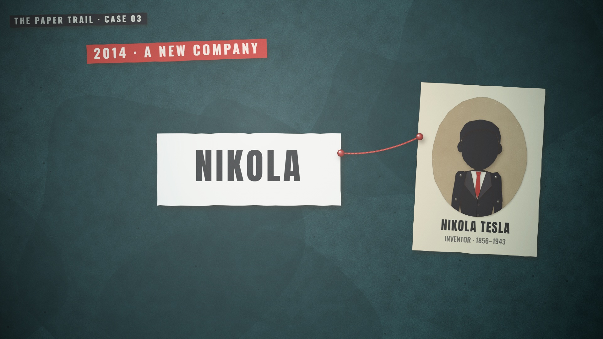
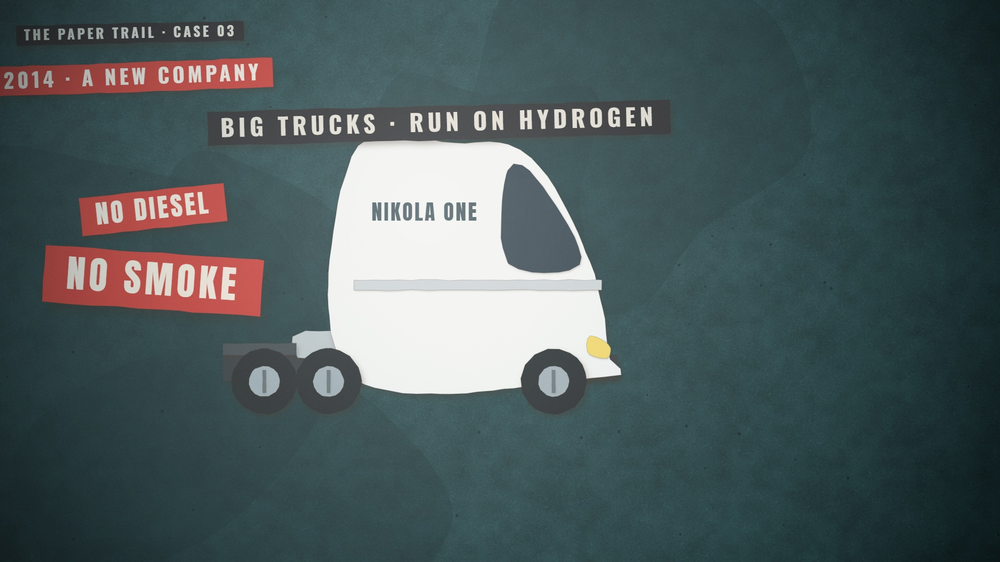
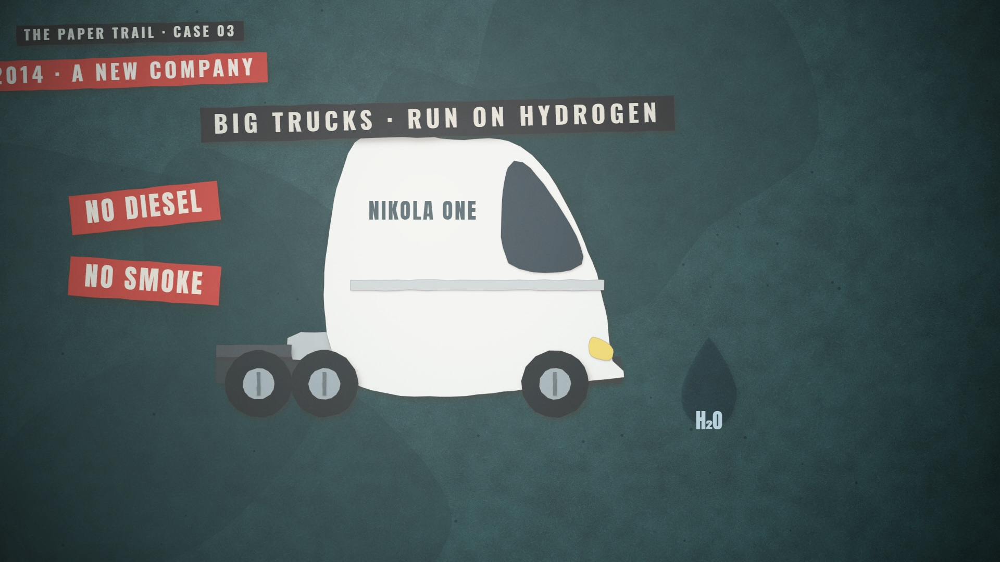
Narration (planned)
- In twenty fourteen, he started a new company.
- He named it after the inventor Nikola Tesla.
- The same inventor another famous company was named after.
- The plan was huge. Big trucks that run on hydrogen. No diesel. No smoke.
- Only water coming out of the pipe.
Picture
2014 · A NEW COMPANY. NIKOLA card, red string to a sepia cut-out portrait, NIKOLA TESLA · INVENTOR · 1856–1943 (generic silhouette). “yes, the same name as that other one”. The white truck: BIG TRUCKS · RUN ON HYDROGEN, NO DIESEL · NO SMOKE, a water drop falls: H₂O.
Sound
- explainer 01 (music/ambience)
- card swipe b
- typewriter keys g
- card place 1
- shutter vintage a
- string snap a
- cutout slide a
The fuel: stations everywhere
2:06.0–2:12.0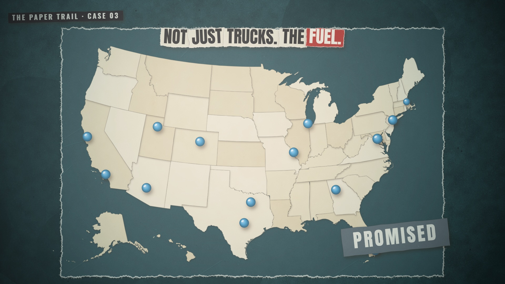
Narration (planned)
- And he didn't just promise the trucks.
- He promised the fuel. A network of hydrogen stations across America.
Picture
NOT JUST TRUCKS. THE FUEL. A US map: blue station pins pop in coast to coast. Stamp: PROMISED.
Sound
- explainer 01 (music/ambience)
- card swipe a
- paper slam a
- push pin a
- stamp press b
The launch, the sheet, the empty bay
2:12.0–2:35.2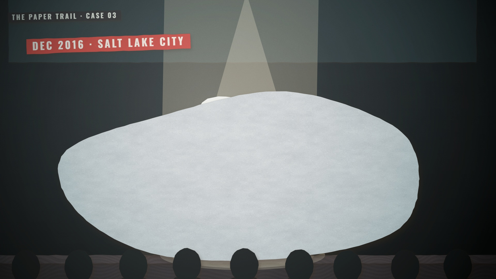
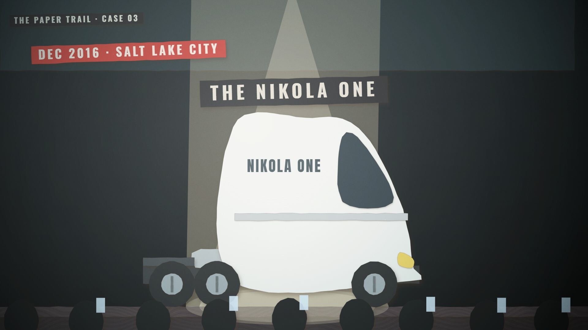
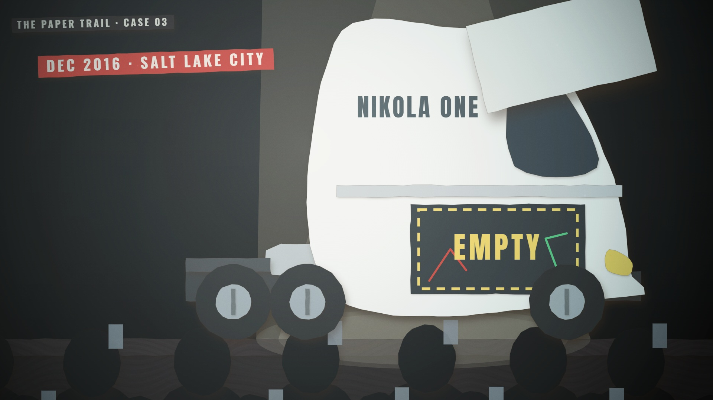
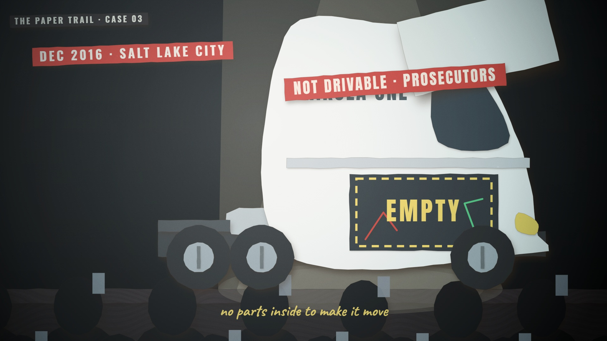
Narration (planned)
- In December twenty sixteen, he held a big launch event in Salt Lake City.
- Lights. Music. A crowd.
- Then the sheet came off.
- There it was. The Nikola One.
- A giant, shiny, futuristic truck.
- But according to prosecutors, there was something the crowd didn't know.
- That truck was not a working truck.
- It couldn't drive itself onto the stage.
- It didn't have the parts inside to make it move.
Picture
DEC 2016 · SALT LAKE CITY. A stage, spotlights, a crowd; a grey sheet over a huge shape. LIGHTS · MUSIC · A CROWD. The sheet flies off, flashbulbs: THE NIKOLA ONE. The room darkens, the camera pushes in, the panel lifts: EMPTY. NOT DRIVABLE · PROSECUTORS. “no parts inside to make it move”.
Sound
- crowd murmur (music/ambience)
- reveal 01 (music/ambience)
- mystery 01 (music/ambience)
- sticker peel b
- typewriter keys h
- crowd cheer a
- flashbulb a
- flashbulb b
- flashbulb a
The reservations
2:35.2–3:00.4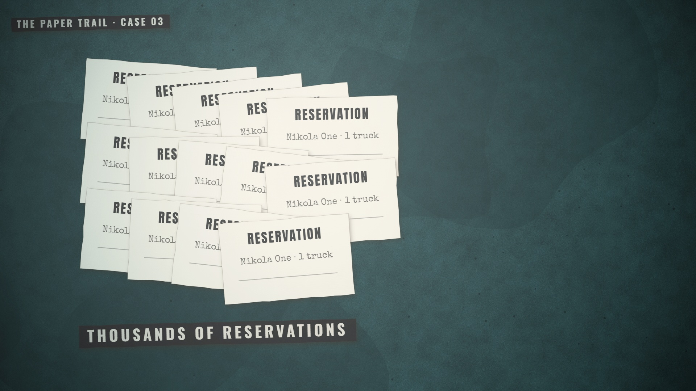
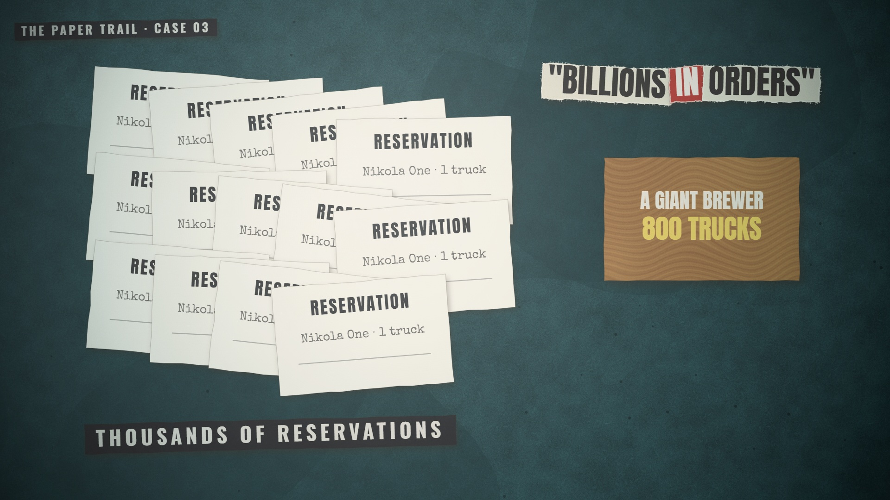
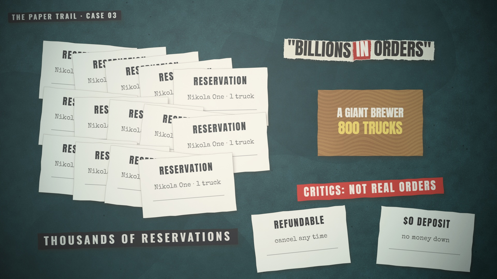
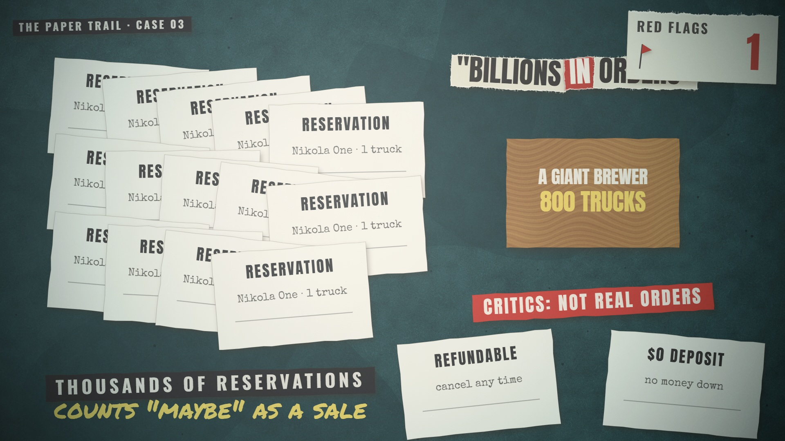
Narration (planned)
- And yet, the orders started coming in.
- Or at least, that's how it sounded.
- Nikola said it had thousands of truck reservations.
- Billions of dollars' worth.
- Big companies signed up, including one of the world's biggest beer brewers.
- But critics later pointed out that many of those reservations were not real orders.
- You could cancel them. Some needed no real deposit at all.
- That's red flag number one.
- When a company counts "maybe" as a sale.
Picture
RESERVATION slips pile up: THOUSANDS OF RESERVATIONS. “BILLIONS IN ORDERS”. A wooden crate card: A GIANT BREWER · 800 TRUCKS (no brand). CRITICS: NOT REAL ORDERS, slips REFUNDABLE and $0 DEPOSIT. RED FLAGS: 1. “counts “maybe” as a sale”.
Sound
- mystery 01 (music/ambience)
- tech 01 (music/ambience)
- card swipe b
- card place 1
- paper slam a
- card place 2
- stamp press b
- card place 1
The loudest voice → 2020 → the hill
3:00.4–3:21.2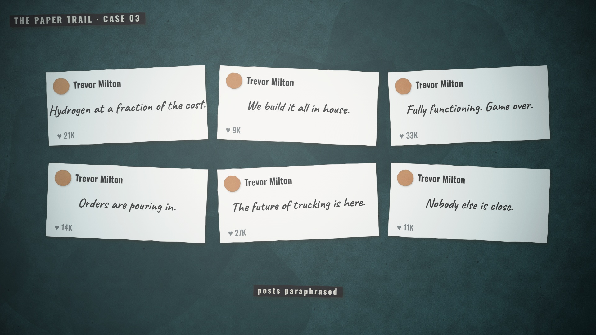
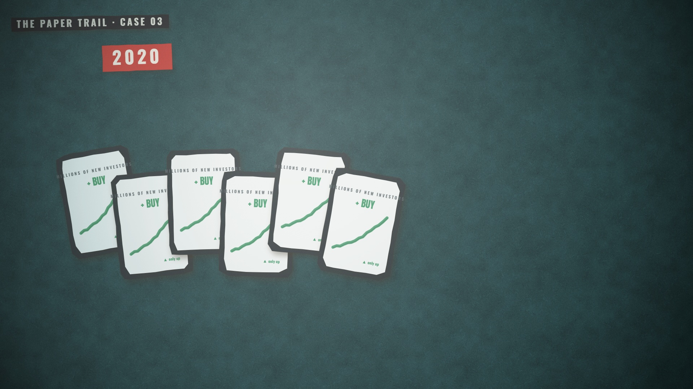
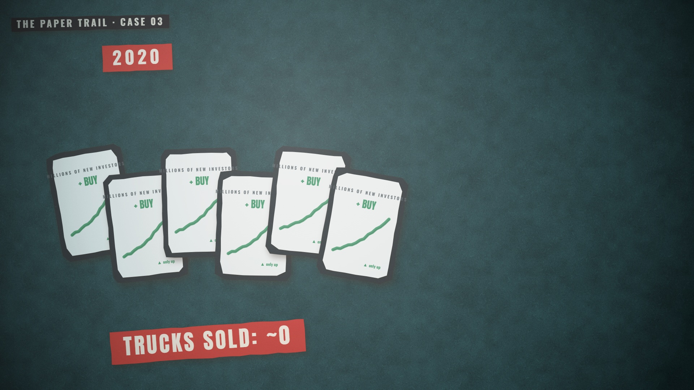
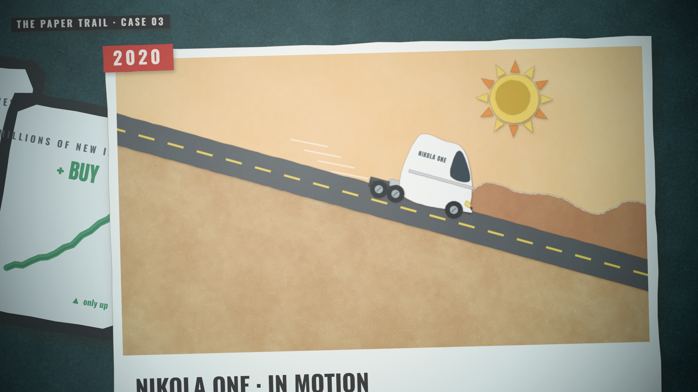
Narration (planned)
- Over the next few years, Trevor Milton became one of the loudest voices in the electric vehicle world.
- He posted almost every day.
- He did interviews. He promised more and more.
- And then, in twenty twenty, he found a way to put Nikola in front of millions of ordinary investors.
- Without ever selling a single truck.
- That's where the hill comes in.
Picture
A wall of six post cards from the founder (paraphrased): “Hydrogen at a fraction of the cost”, “We build it all in house”, “Fully functioning”… Then 2020: a row of trading-app phones (MILLIONS OF NEW INVESTORS), TRUCKS SOLD: ~0, and the camera pushes into the IN MOTION video: Part 2 opens on the hill.
Sound
- mystery 01 (music/ambience)
- tech 01 (music/ambience)
- sticker peel a
- notification ping a
- notification ping b
- notification ping a
- typewriter keys g
- notification ping b